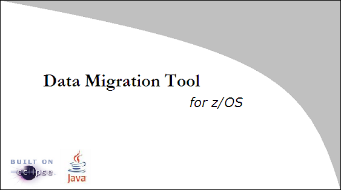

Data Migration Tool for z/OS (DMTz) is a light-weight data migration tool to copy data from one z/OS server to another one. It submits JCL jobs to the servers, and supports both table and dataset migrations.
The project is built on Eclipse platform and uses the core libraries of edtftpj and hsqldb. The application is delivered as a standalone client running on Microsoft Windows.
Browse topics in the Contents frame on the left. Click on a topic to have it displayed. Use the Back and Forward buttons to navigate within the history of viewed topics.
To quickly locate topics on a particular subject in the documentation, enter a query in the Search field. Use the Search frame to display the Search view. You can narrow the scope of your search by selecting only the sections you are interested in.